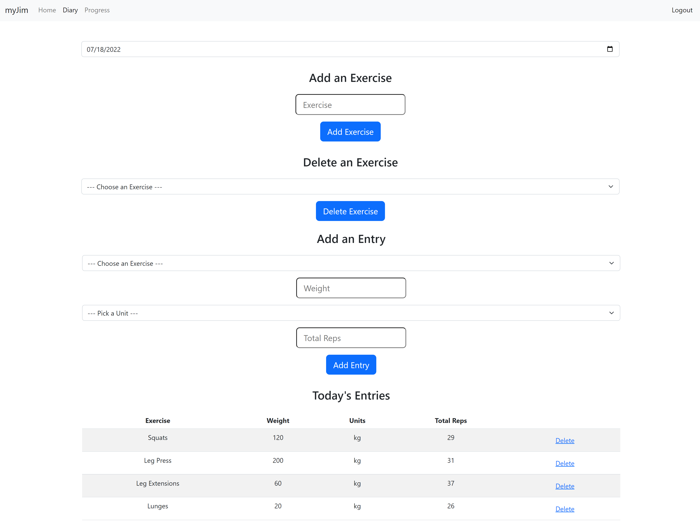
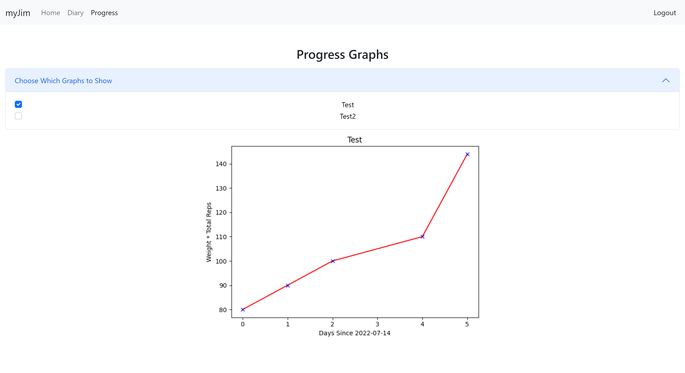

While I was learning to code in the summer of 2022, multiple people told me that the best way to learn was to do different coding projects. So as I was learning different things from online courses, I tried to implement that knowledge in the projects below. As you will see below, I wanted to carry out a variety of projects so I could learn about the different applications of coding and discover what I enjoyed doing. This page contains a short description about each project. If you would like to learn more about a particular project or see the code I wrote for it, you can visit the project's GitHub Repository which is linked to the name of each project. The projects are displayed in chronological order, from the one I started most recently down to my first ever coding project.
My latest project so far is this website, my online portfolio. I wanted to create a place where I could put all my hard work on display because a lot of the details that are included about projects on this website need to be left out on Resumes and other types of applications. Creating this taught me a lot about webpage design with HTML and CSS. It also made me more familiar with the different things I could do with Bootstrap. The back end for this website was relatively simple, although I did learn how to send emails from a web app (check out the Contact page).
myJim is a web app I am working on which allows people to create accounts, track their progress in the gym, and see the progress visually in the form of graphs that are generated by the data they input. I am using Python, Flask, and SQL along with HTML, CSS, and Javascript to implement this idea. So far, my main focus has been on getting the back end of the web app working which I have essentially finished. At this point users can register, login, and logout. They can also add data about the different exercises, weight, and reps they did on different days to an SQL database where the data for the web app is stored.

Furthermore, they can see their progress over time visually with graphs generated by the matplotlib module for Python from the data in the SQL database.

I still need to make sure that users cannot mess up the web app with bad inputs into forms. However before I do that, I want to shift my focus onto the front end of the web app and make it look better.